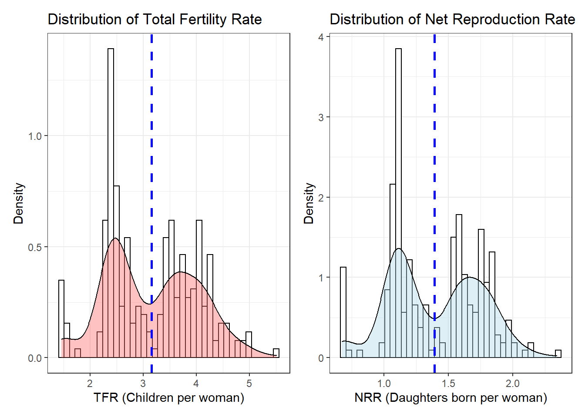
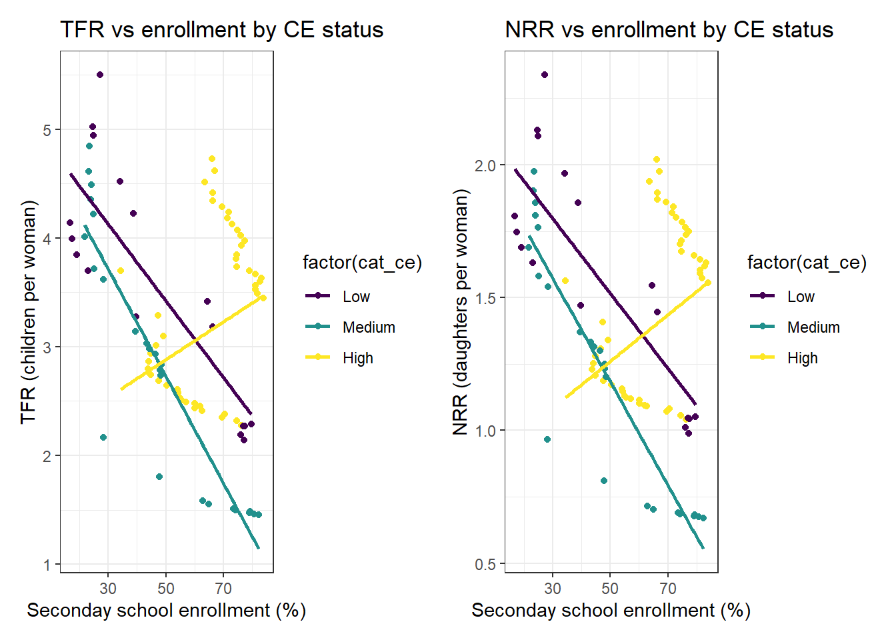

Overview
Fertility rate, an indicator of the number of births per woman, is known to have an inverse relationship with secondary school enrollment. With the global increase in the number of natural disasters and disease outbreaks annually, we would like to explore how this relationship is affected by the complex emergency status. We developed two linear models using each fertility measure - Total Fertility Rate (TFR) and Net Reproduction Rate (NRR) - as an outcome variable. The two covariates, Secondary School Enrollment and Category of Complex Emergencies were used in each model to understand their effect on the outcome variable. Complex emergency status, a categorical variable consisting of three levels (High/Medium/Low) was used to build a nested linear model. Using a two-way ANOVA, the effect of complex emergency status on the linear association between the fertility measure and secondary school enrollment was found to be statistically significant.
Covariates
Each model consists of two covariates, namely:
sec_school_enroll - Secondary school enrollment, a continuous numeric variablecat_ce - Relative category of total complex emergency, a categorical variable consisting of 3 levels (High/Medium/Low)
Primary Analysis
There are two linear models built as a part of this study with two outcome variables - Total Fertility Rate (TFR) and Net Reproduction Rate (NRR). The objective of the regression analysis is to understand the relationship between the covariates and the outcome in each model to draw inferences. Each dataset consists of 249 rows.
Distribution of Fertility measure
From the two histograms shown below, we can observe that both fertility measures are evenly distributed around the mean (blue dotted line) and that they appear to have similar distributions.
# TFR distribution
tfr_plot =
tfr_df %>%
ggplot(aes(x = tfr)) +
geom_histogram(aes(y = ..density..), color = "black", fill = "white", bins = 40) +
geom_density(alpha = .4, fill = "#FF6666") +
geom_vline(aes(xintercept = mean(tfr)), color = 'blue', linetype = "dashed", size = 1) +
labs(
x = 'TFR (Children per woman)',
y = 'Density',
title = 'Distribution of Total Fertility Rate'
) +
theme_bw()
# NRR distribution
nrr_plot =
nrr_df %>%
ggplot(aes(x = nrr)) +
geom_histogram(aes(y = ..density..), color = "black", fill = "white", bins = 40) +
geom_density(alpha = .4, fill = "lightblue") +
geom_vline(aes(xintercept = mean(nrr)), color = 'blue', linetype = "dashed", size = 1) +
labs(
x = 'NRR (Daughters born per woman)',
y = 'Density',
title = 'Distribution of Net Reproduction Rate'
) +
theme_bw()
tfr_plot + nrr_plot

Fertility measure (Y) vs secondary school enrollment (X) based on CE status
As demonstrated with the charts below, the relationship between fertility estimates does appear to vary with complex emergency status. Points within a CE group appear to follow a continuous pattern.
# TFR distribution
tfr_plot =
tfr_df %>%
ggplot(aes(x = sec_school_enroll, y = tfr, color = factor(cat_ce))) +
geom_point() +
geom_smooth(method = "lm", se = F,
aes(group = factor(cat_ce),
color = factor(cat_ce))) +
labs(
x = 'Seconday school enrollment (%)',
y = 'TFR (children per woman)',
title = 'TFR vs enrollment by CE status'
) +
theme_bw()
# NRR distribution
nrr_plot =
nrr_df %>%
ggplot(aes(x = sec_school_enroll, y = nrr, color = factor(cat_ce))) +
geom_point() +
geom_smooth(method = "lm", se = F,
aes(group = factor(cat_ce),
color = factor(cat_ce))) +
labs(
x = 'Seconday school enrollment (%)',
y = 'NRR (daughters per woman)',
title = 'NRR vs enrollment by CE status'
) +
theme_bw()
tfr_plot + nrr_plot

Estimates
To analyze how secondary school enrollment affects a specific fertility measure of interest for a specific category of complex emergency, we created models nested within the category of complex emergency.
Total Fertility Rate
# Nested model for total fertility rate
tfr_lm_res =
tfr_df %>%
nest(data = -cat_ce) %>%
# Mapping the linear models by levels
mutate(
models = map(data, ~lm(tfr ~ sec_school_enroll, data = .x)),
results = map(models, broom::tidy)) %>%
# Organizing results
select(-data, -models) %>%
unnest(results) %>%
filter(term == "sec_school_enroll")
tfr_lm_res %>%
arrange(factor(cat_ce)) %>%
knitr::kable(digits = 3)
| Low |
sec_school_enroll |
-0.035 |
0.006 |
-6.341 |
0 |
| Medium |
sec_school_enroll |
-0.049 |
0.003 |
-15.018 |
0 |
| High |
sec_school_enroll |
0.017 |
0.004 |
4.638 |
0 |
Net Reproduction Rate
# Nested model for net reproduction rate
nrr_lm_res =
nrr_df %>%
nest(data = -cat_ce) %>%
# Mapping the linear model by levels
mutate(
models = map(data, ~lm(nrr ~ sec_school_enroll, data = .x)),
results = map(models, broom::tidy)) %>%
# Organizing results
select(-data, -models) %>%
unnest(results) %>%
filter(term == "sec_school_enroll")
nrr_lm_res %>%
arrange(factor(cat_ce)) %>%
knitr::kable(digits = 3)
| Low |
sec_school_enroll |
-0.014 |
0.002 |
-6.401 |
0 |
| Medium |
sec_school_enroll |
-0.019 |
0.001 |
-15.634 |
0 |
| High |
sec_school_enroll |
0.009 |
0.002 |
5.741 |
0 |
Within a category of complex emergency, there is a decreasing relationship between school enrollment and fertility estimate for Low and Medium categories. However, the relationship is increasing in the case of High category.
Hypotheses
Association between secondary school enrollment and fertility measure
Null hypothesis: Secondary school enrollment is not linearly associated with the respective fertility estimate
Alternate hypothesis: Secondary school enrollment is significantly linearly associated with the respective fertility estimate
Total Fertility Rate
lm(tfr ~ sec_school_enroll,data = tfr_df) %>%
broom::tidy() %>%
knitr::kable()
| (Intercept) |
3.7292317 |
0.1889824 |
19.733219 |
0.0000000 |
| sec_school_enroll |
-0.0093138 |
0.0029369 |
-3.171298 |
0.0017095 |
At a 5% significance level, there is a significant linear association between both total fertility rate and secondary school enrollment
Net Reproduction Rate
lm(nrr ~ sec_school_enroll,data = nrr_df) %>%
broom::tidy() %>%
knitr::kable()
| (Intercept) |
1.5587839 |
0.0788116 |
19.778605 |
0.0000000 |
| sec_school_enroll |
-0.0026934 |
0.0012248 |
-2.199044 |
0.0288022 |
At a 5% significance level, there is a significant linear association between both total fertility rate and secondary school enrollment
Association between secondary school enrollment adjusting for complex emergencies
In order to test if the relationship between secondary school enrollment and the outcome variable is distorted by the complex emergency status, we use ANOVA. Here, the model is adjusted for the complex emergency status.
Total Fertility Rate
Null Hypothesis: The effect of female secondary school enrollment is not significantly related to total fertility rate, adjusting for relative level of complex emergencies.
Alternative Hypothesis: The effect of female secondary school enrollment is significantly related to total fertility rate, adjusting for relative level of complex emergencies.
# Null model
tfr_fit_null = lm(tfr ~ sec_school_enroll,data = tfr_df)
# Alternate larger model
tfr_fit_alt = lm(tfr ~ cat_ce + sec_school_enroll, data = tfr_df)
# ANOVA test
anova(tfr_fit_null, tfr_fit_alt) %>%
broom::tidy() %>%
knitr::kable()
| 247 |
174.9885 |
NA |
NA |
NA |
NA |
| 245 |
163.4584 |
2 |
11.53008 |
8.640944 |
0.0002364 |
The test statistic obtained is greater than the F critical value = 3.744753. Hence, we reject the null hypothesis and conclude that school enrollment is significantly related to the total fertility rate adjusting for complex emergencies.
Net Reproduction Rate
Null Hypothesis: The effect of female secondary school enrollment is not significantly related to net reproduction rate, adjusting for relative level of complex emergencies.
Alternative Hypothesis: The effect of female secondary school enrollment is significantly related to net reproduction rate, adjusting for relative level of complex emergencies.
# Null model
nrr_fit_null = lm(nrr ~ sec_school_enroll, data = nrr_df)
# Alternate larger model
nrr_fit_alt = lm(nrr ~ cat_ce + sec_school_enroll, data = nrr_df)
# ANOVA test
anova(nrr_fit_null, nrr_fit_alt) %>%
broom::tidy() %>%
knitr::kable()
| 247 |
30.43316 |
NA |
NA |
NA |
NA |
| 245 |
27.95482 |
2 |
2.478337 |
10.86025 |
3.03e-05 |
The test statistic obtained is greater than the F critical value = 3.744753. Hence, we reject the null hypothesis and conclude that school enrollment is significantly related to the total fertility rate adjusting for complex emergencies.
Conclusions
From our scatter plot, we see that both Fertility Measures and Secondary School Enrollment are inversely associated as previously known. The data also presents a clear association between the Fertility Measures and Secondary School Enrollment with Complex Emergencies as a confounder. When statistically explored, there is a significant effect of Complex Emergencies on the relationship between Secondary School Enrollment and Fertility Measures (p-value < 0.001).
Overall, we would like to conclude that our linear models demonstrate that level of relative complex emergencies have a significant effect on secondary school enrollment and fertility measures in the included Southeast Asian countries from 1980 - 2010.